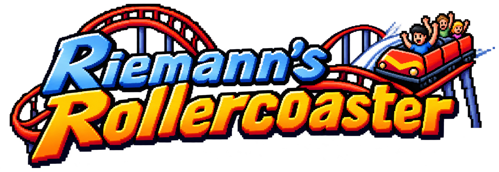

Starting…
| W / ↑ | Accelerate with the linear motors (time trial) |
| S / ↓ | Brake (time trial) |
| C · 1–6 | Camera: front seat, back seat, chase, side, trackside, orbit |
| Mouse drag | Look around in the seats, orbit around the train |
| Double click | Reset the view |
| Wheel | Zoom (orbit and chase) |
| Space | Dispatch the train from the station (free ride) |
| R | Restart the time trial |
| Esc · P | Pause menu |
| N | Sound on / off |
Time trial: the gauge shows the safe speed for the track ahead. Above it the riders get more than 6 g in the valleys, less than −1 g over the hills or more than 2 g sideways, and the train derails (+5 s).
Press H or any key to close.